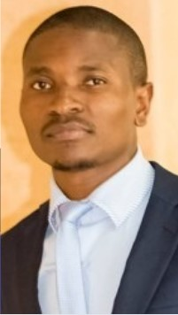

Environmental & Aquaculture Researcher
MSc Biology (Ecology & Biodiversity) – Copperbelt University
Download CVEnvironmental and aquaculture researcher with a BSc in Fisheries and Aquaculture, currently pursuing an MSc in Biology (Ecology & Biodiversity) at Copperbelt University. I focus on aquatic ecosystem health, biodiversity, water quality, and heavy metal bioaccumulation. I combine research with technology, using Python, data science, and analytics to study and solve environmental and biological challenges. Passionate about sustainable aquaculture, climate resilience, and conservation, I aim to work as a research scientist and tech-driven environmental innovator.
Assessment of Heavy Metals Bioaccumulation and Microbial Diversity in Farmed and Wild Tilapia in the Kafue River – Kitwe District.
Effects of Copper Deposits on Tilapia in Aquatic Systems – Case Study of the Kafue River.
Environmental monitoring and biodiversity auditing in mining ecosystems.
mikebwalya7@gmail.com
0760149581
Kitwe, Zambia